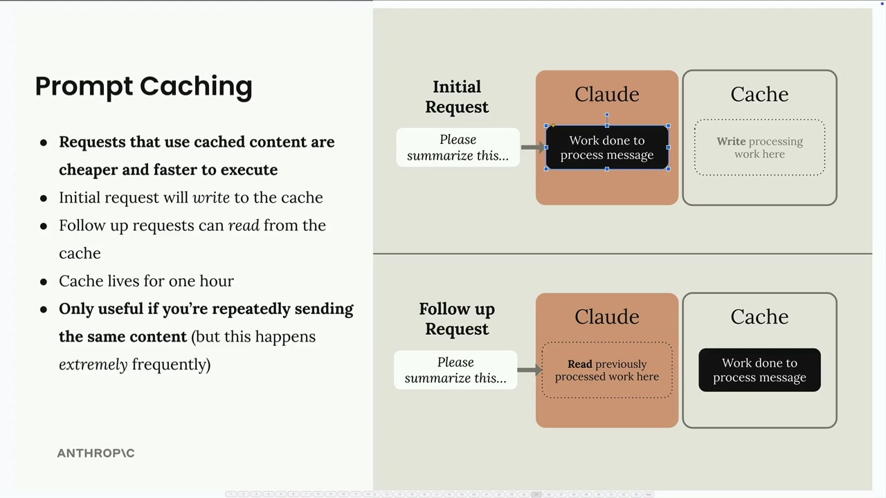
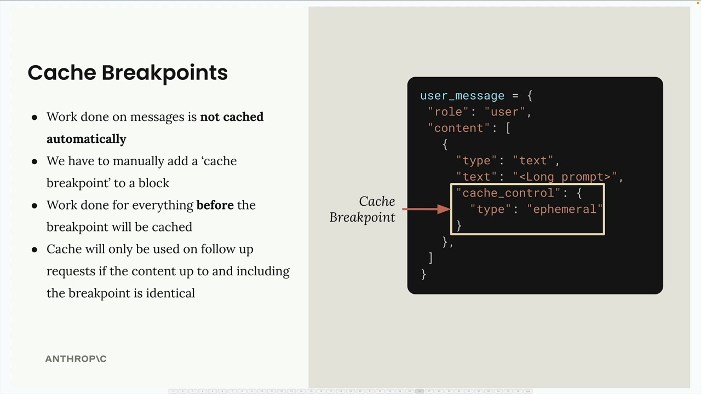
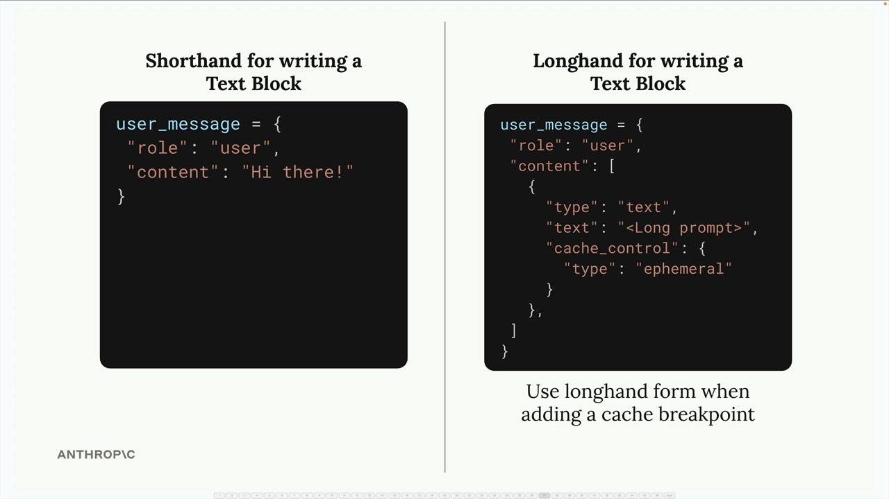
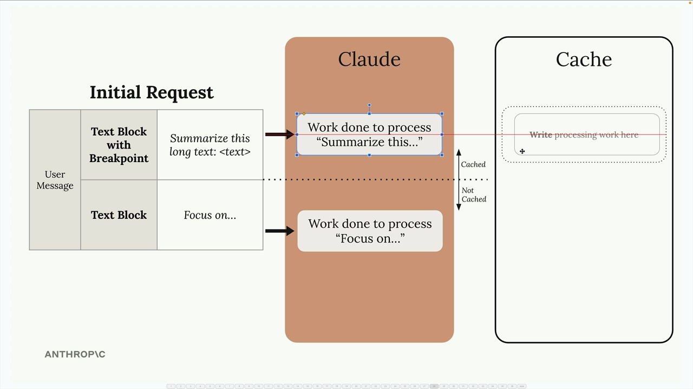
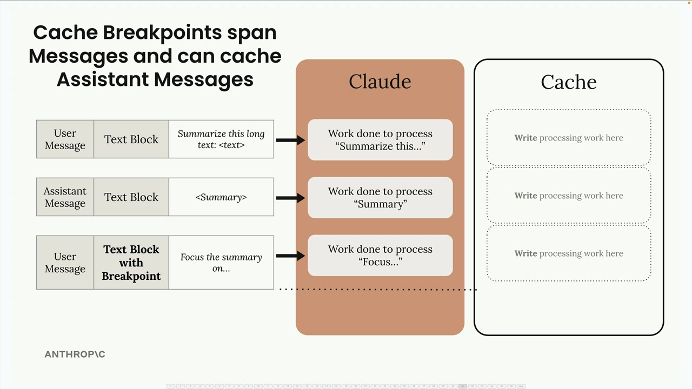
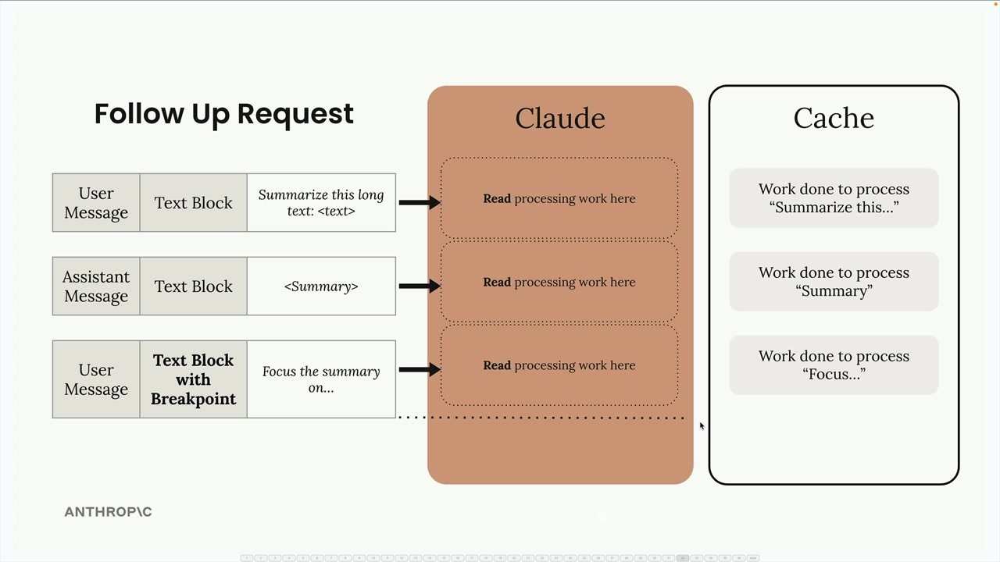
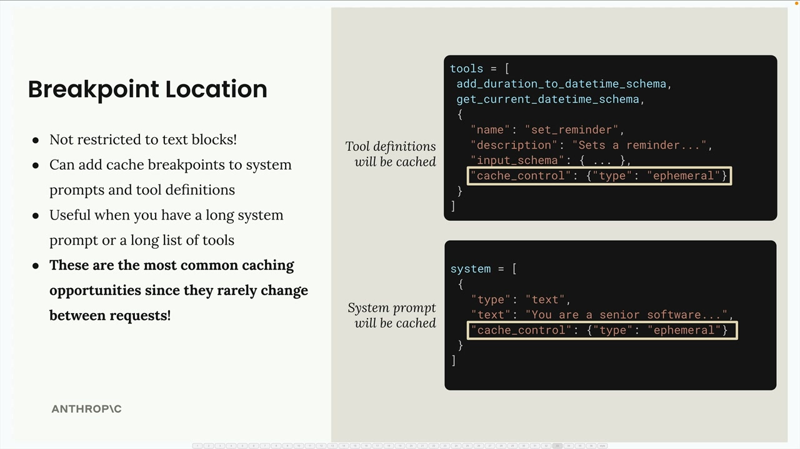
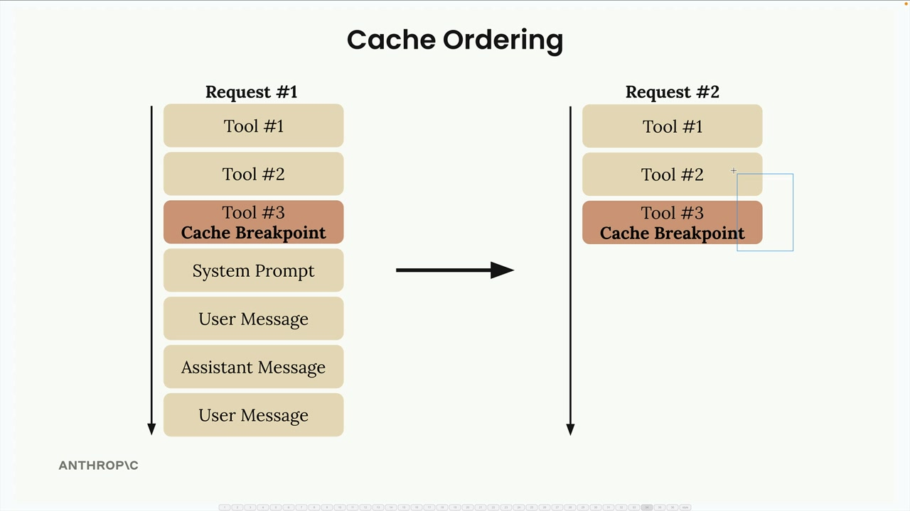
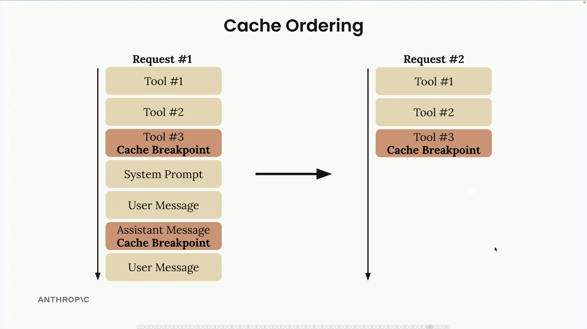
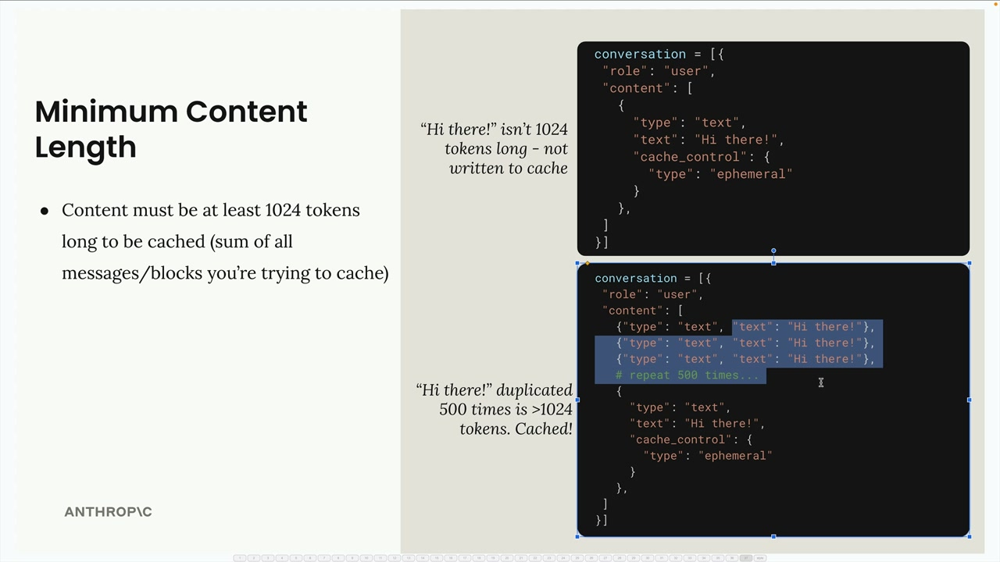

Правила prompt caching
Чему научитесь
Видео 6:41 и текст урока
К концу урока вы сможете:
- ставить точки кеширования (
cache_control) в блоках; - объяснить, почему кеш сбрасывается от малейшего изменения;
- учитывать порядок частей запроса, лимит точек и минимальный размер.
Видео и текст урока.
Смотреть урок на Skilljar Rules of prompt caching · 6:41Prompt caching в Claude сохраняет вычислительную работу над вашими сообщениями, чтобы её можно было переиспользовать в следующих запросах. Это делает повторные запросы быстрее и дешевле, но только когда вы снова и снова отправляете одинаковое содержимое.

Процесс простой: первый запрос записывает работу в кеш, а следующие могут читать из кеша, не обрабатывая то же содержимое заново. Кеш живёт час, поэтому возможность полезна, только если вы повторно отправляете одно и то же в течение этого времени.
Точки кеширования
Кеширование не включается само — нужно вручную добавить точки кеширования (cache breakpoints) к определённым блокам сообщений. Как это работает:
- работа над сообщениями автоматически не кешируется;
- нужно вручную добавить «точку кеширования» к блоку;
- кешируется работа над всем, что стоит до этой точки;
- кеш используется в следующих запросах, только если содержимое до точки включительно полностью совпадает.

cache_control: {"type": "ephemeral"} — это и есть точка кеширования.Чтобы добавить точку кеширования, нужна полная форма записи текстового блока вместо краткой:

"content": "Hi there!") и полная — со списком блоков и cache_control.В краткой форме негде указать поле кеширования, поэтому нужна развёрнутая форма с полем cache_control, равным {"type": "ephemeral"}.
Как работают точки кеширования
Когда вы ставите точку кеширования в сообщение, Claude кеширует всю работу до этой точки включительно. Содержимое после точки обрабатывается обычно, без кеша.

Чтобы кеш пригодился в следующих запросах, содержимое до точки должно совпадать полностью. Даже маленькое изменение — например, добавленное слово «please» — делает кеш недействительным, и Claude обработает всё заново.

Кеш через несколько сообщений
Точки кеширования действуют через несколько сообщений и типов сообщений. Если поставить точку в более позднем сообщении, все предыдущие (пользователя, ассистента и т. д.) войдут в кешируемое содержимое.

Это особенно полезно в разговорах, где нужно закешировать весь контекст до определённого момента.
System prompt и инструменты
Точки кеширования можно ставить не только в текстовые блоки, но и в:
- system prompt;
- описания инструментов;
- блоки изображений;
- блоки вызова инструментов и их результатов.

cache_control на последнем инструменте и в блоке system prompt — кешируются оба.System prompt и описания инструментов — отличные кандидаты для кеша: между запросами они почти не меняются. Чаще всего именно здесь prompt caching даёт наибольшую выгоду.
Порядок кеширования
Внутри Claude обрабатывает части запроса в определённом порядке: сначала инструменты, потом system prompt, потом сообщения. Понимание этого порядка помогает правильно расставлять точки.

Всего можно поставить до четырёх точек кеширования. Например, закешировать инструменты, а другую точку поставить посреди истории разговора. Это даёт гибкость в том, что кешируется, когда разные части запроса меняются.

Минимальный размер
Для кеширования есть минимальный порог: содержимое должно быть не меньше 1024 токенов. Считается сумма всех сообщений и блоков, которые вы пытаетесь закешировать, а не отдельные блоки.

Простое сообщение «Hi there!» до порога не дотягивает, но если повторить его 500 раз (или у вас действительно длинный промпт), набирается больше 1024 токенов, и содержимое можно кешировать.
Ключ к эффективному prompt caching — определить, какие части запросов не меняются от вызова к вызову, и расставить точки так, чтобы максимально переиспользовать кеш и как можно реже его сбрасывать.
Дальше
Следующий урок — prompt caching в коде: кеш инструментов и system prompt, поля usage.
Оригинал урока: Rules of prompt caching.